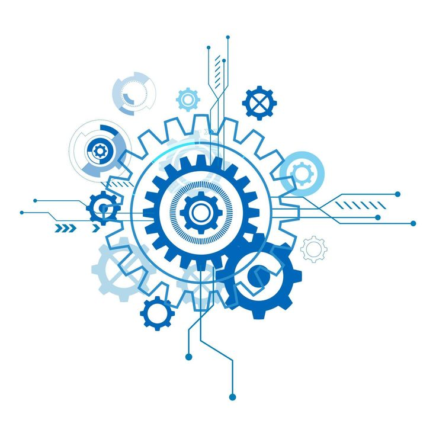
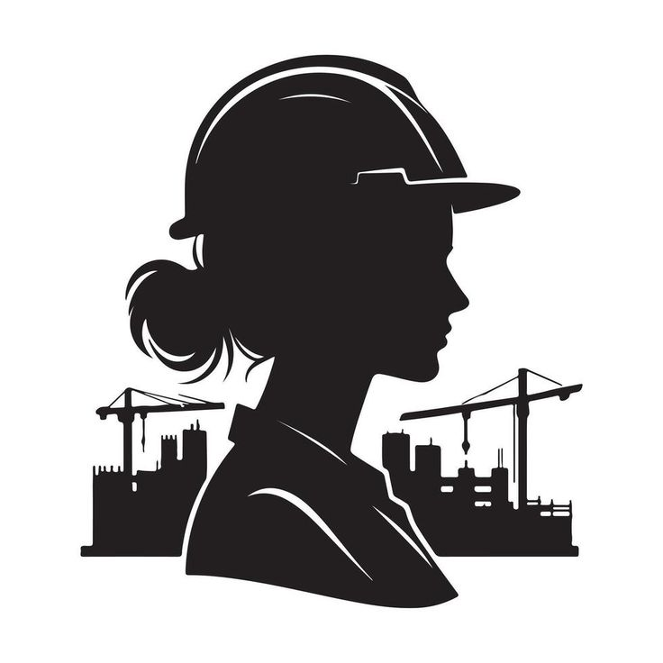
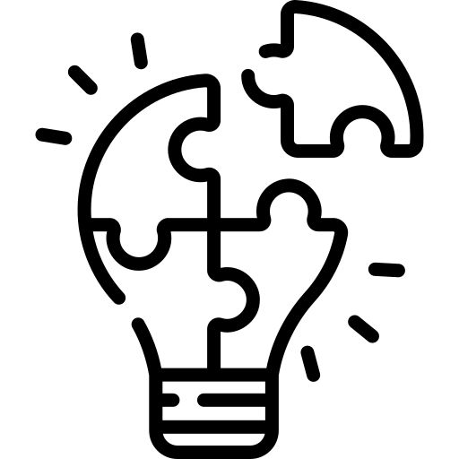

2,5 millones a.C.
Paleolítico
Herramientas de piedra tallada, control del fuego y refugios primitivos: ingeniería basada en experiencia y adaptación al entorno.
La ingeniería aplica conocimientos científicos y matemáticos para resolver problemas prácticos. Convierte las ideas en soluciones tangibles que transforman la vida cotidiana.
Explora algunos momentos clave de la evolución técnica que dio forma a la ingeniería.
Herramientas de piedra tallada, control del fuego y refugios primitivos: ingeniería basada en experiencia y adaptación al entorno.
Ramas de la ingeniería
Tres miradas para entender el rol: qué es, cómo piensa y qué hace dentro de proyectos reales.

Un ingeniero es un profesional que encuentra soluciones a problemas reales aplicando ciencia y matemática para crear o mejorar sistemas, estructuras y máquinas.

Destaca por mentalidad analítica, ingenio, pensamiento crítico, resiliencia al fallo, ética y responsabilidad frente al impacto de sus decisiones.

Resuelve problemas, optimiza procesos, modela y simula soluciones, gestiona proyectos, investiga nuevas tecnologías y mejora sistemas existentes.